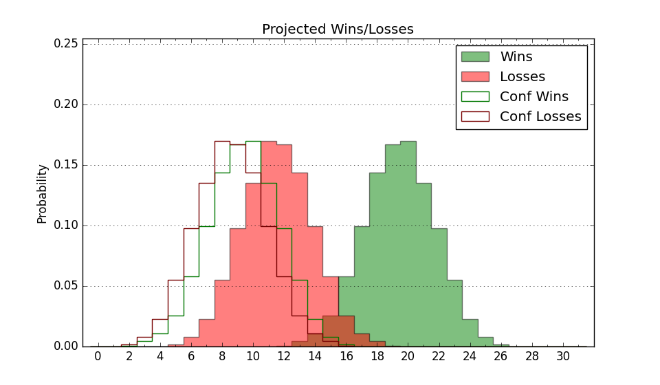

| Home | Game Probabilities | Conferences | Preseason Predictions | Odds Charts | NCAA Tournament |
| City: | Pittsburgh, Pennsylvania | |
| Conference: | Atlantic 10 (3rd)
| |
| Record: | 0-1 (Conf) 10-4 (Overall) | |
| Ratings: | Comp.: 2.0 (146th) Net: 2.0 (145th) Off: 105.8 (95th) Def: 103.7 (222nd) SoR: 13.6 (98th) |
| Remaining | ||||||
|---|---|---|---|---|---|---|
| Date | Opponent | Win Prob | Pred. | |||
| 12/31 | Rhode Island (266) | 83.3% | W 74-63 | |||
| 1/4 | VCU (112) | 55.5% | W 68-67 | |||
| 1/7 | @ Richmond (110) | 26.8% | L 63-69 | |||
| 1/11 | @ Saint Joseph's (244) | 55.8% | W 73-71 | |||
| 1/18 | @ St. Bonaventure (172) | 41.4% | L 65-67 | |||
| 1/21 | Fordham (202) | 74.7% | W 74-66 | |||
| 1/25 | Loyola Chicago (173) | 70.6% | W 69-64 | |||
| 1/28 | @ Massachusetts (123) | 30.5% | L 69-75 | |||
| 2/4 | @ George Washington (210) | 48.1% | L 73-74 | |||
| 2/8 | George Mason (94) | 49.8% | L 67-68 | |||
| 2/11 | St. Bonaventure (172) | 70.6% | W 69-63 | |||
| 2/15 | Saint Joseph's (244) | 81.1% | W 77-67 | |||
| 2/18 | @ Saint Louis (97) | 23.1% | L 70-78 | |||
| 2/22 | @ La Salle (283) | 63.5% | W 72-68 | |||
| 2/26 | Davidson (137) | 62.6% | W 71-68 | |||
| 3/1 | Massachusetts (123) | 59.9% | W 74-71 | |||
| 3/4 | @ Fordham (202) | 46.5% | L 69-70 | |||
| Previous | Game Score | |||||
| Date | Opponent | Win Prob | Result | Off | Def | Net |
| 11/8 | Montana (193) | 73.8% | W 91-63 | 20.4 | 12.1 | 32.6 |
| 11/11 | @Kentucky (25) | 8.7% | L 52-77 | -22.9 | 7.5 | -15.5 |
| 11/14 | South Carolina St. (351) | 94.7% | W 96-71 | 6.6 | -2.0 | 4.6 |
| 11/18 | (N) Colgate (160) | 52.9% | W 85-80 | 6.2 | -0.3 | 6.0 |
| 11/21 | North Florida (254) | 82.3% | W 83-82 | 9.2 | -22.9 | -13.7 |
| 11/23 | Alabama St. (350) | 94.5% | W 75-57 | 0.9 | 0.3 | 1.2 |
| 11/29 | UC Santa Barbara (96) | 50.4% | W 72-61 | 7.0 | 7.6 | 14.6 |
| 12/3 | Ball St. (134) | 62.4% | W 78-77 | 10.9 | -20.5 | -9.6 |
| 12/8 | Marshall (75) | 44.1% | L 71-82 | -6.6 | -8.0 | -14.5 |
| 12/11 | New Mexico St. (102) | 52.9% | L 60-73 | -19.6 | -2.4 | -22.1 |
| 12/14 | DePaul (154) | 66.5% | W 66-55 | -10.0 | 18.7 | 8.7 |
| 12/17 | Indiana St. (129) | 60.7% | W 92-86 | 13.3 | -7.8 | 5.6 |
| 12/21 | Winthrop (236) | 80.0% | W 74-57 | 3.1 | 13.2 | 16.3 |
| 12/28 | @Dayton (65) | 15.8% | L 57-69 | -3.9 | -2.0 | -5.9 |
| Stats & Trends | |||||
|---|---|---|---|---|---|
| Current | Day | Week | Month | Season | |
| Composite | 2.0 | -0.1 | -0.7 | +1.3 | +0.3 |
| Comp Rank | 146 | -1 | -7 | +13 | -7 |
| Net Efficiency | 2.0 | -0.1 | -0.8 | +2.4 | -- |
| Net Rank | 145 | +3 | -4 | +38 | -- |
| Off Efficiency | 105.8 | -0.2 | -0.4 | -1.6 | -- |
| Off Rank | 95 | -2 | -5 | -24 | -- |
| Def Efficiency | 103.7 | +0.1 | -0.4 | +4.1 | -- |
| Def Rank | 222 | +7 | -4 | +66 | -- |
| SoS Rank | 283 | +1 | +29 | +51 | -- |
| Exp. Wins | 19.4 | +0.0 | -0.4 | +1.8 | +3.1 |
| Exp. Conf Wins | 9.4 | +0.0 | -0.4 | +1.0 | +1.1 |
| Conf Champ Prob | 3.7 | +0.1 | -3.8 | +1.0 | +0.8 |

| Advanced Stats | ||
|---|---|---|
| Stat | Value | Rank |
| Off Eff FG % | 0.510 | 139 |
| Off Ast Ratio | 0.158 | 70 |
| Off ORB% | 0.347 | 21 |
| Off TO Rate | 0.148 | 88 |
| Off FT Ratio | 0.241 | 330 |
| Def Eff FG % | 0.490 | 148 |
| Def Ast Ratio | 0.137 | 155 |
| Def ORB% | 0.333 | 333 |
| Def TO Rate | 0.171 | 114 |
| Def FT Ratio | 0.312 | 191 |